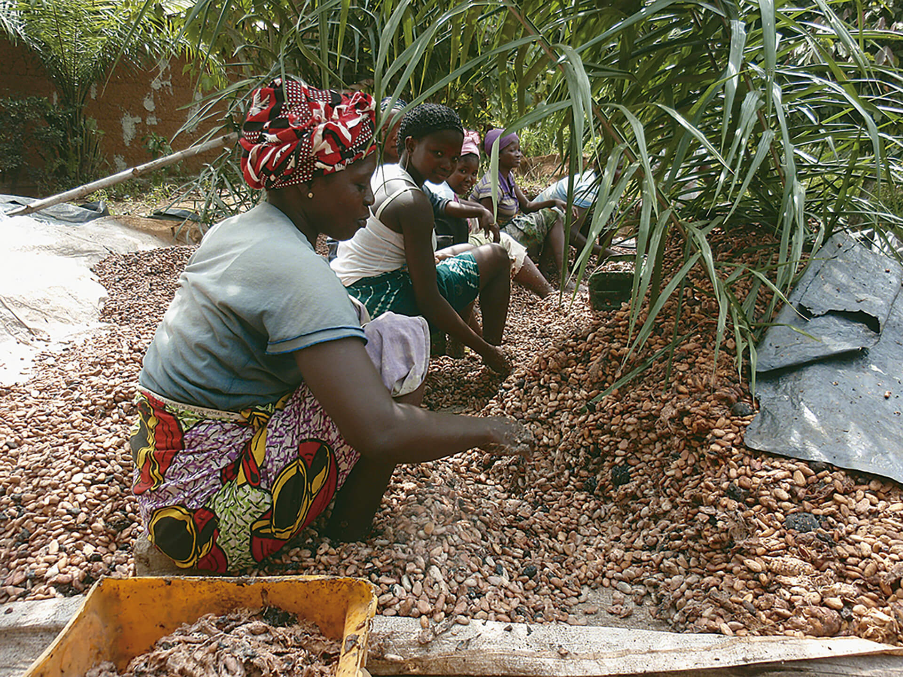

Unidade 05 Exploração dos recursos naturais na Ásia, Europa e Oceania
Introdução
A região em evidência na imagem noturna de satélite detém, em parte de seu subsolo e do fundo marinho, imprescindíveis jazidas minerais para a economia atual.
Que região é essa? Que penínsulas, golfos, canais, mares e outros aspectos da geografia dessa região você reconhece?
As concentrações luminosas indicam, em geral, as áreas mais densamente urbanizadas. Você reconhece algumas aglomerações urbanas apresentadas nessa imagem? Cite-as.
Que recursos minerais tornam essa região uma das mais estratégicas da geopolítica mundial na atualidade?
Objetivos
Apontar os recursos naturais mais estratégicos para os países da Europa, Ásia e Oceania.
Identificar os aspectos econômicos da exploração dos recursos naturais, em especial os energéticos, como parte essencial da geopolítica europeia e asiática dos séculos XX e XXI.
Estimular uma reflexão crítica a respeito da exploração dos recursos naturais e sustentabilidade.
Recursos naturais são todos os bens úteis encontrados na natureza, aqueles que têm valor econômico para a sociedade humana. Ou seja, trata-se dos bens que são utilizados para a sobrevivência e o bem-estar das pessoas.
Atualmente os recursos naturais com maior destaque na Europa, Ásia e Oceania, não somente por conta do valor econômico, mas também do ponto de vista político, são os combustíveis e fontes de energia. Vejamos melhor o contexto
geopolítico e econômico que envolve as fontes de energia para, em seguida, analisarmos as relações dos recursos com o trabalho e a economia nesses continentes.
Fontes de energia
A exploração de recursos naturais, desde os tempos mais remotos, sempre esteve vinculada à necessidade de produção de energia. Durante a Antiguidade, a madeira das florestas, por exemplo, além de servir à construção e de combustível
para as atividades metalúrgicas, era muito utilizada no cozimento de alimentos e no aquecimento de ambientes. Mesmo o óleo de oliva, ou azeite, era extensamente cultivado por gregos, romanos e outros povos mediterrâneos antigos que o
utilizavam para finalidades diversas, entre elas para servir de combustível de iluminação.
Lamparinas como as da foto, feitas em barro ou metal, que usavam azeite como combustível, já eram utilizadas desde tempos remotos
O carvão mineral também era explorado como combustível na China antiga, séculos atrás. A exploração, inclusive, já ocorria em minas subterrâneas, que utilizavam sistemas de ventilação. Entretanto, o advento da Revolução Industrial, no
século XVIII, trouxe novas técnicas de mineração por meio do uso combinado de diamante nas brocas de perfuração, dinamite para explosões e trilhos instalados para acessar mais profundamente o interior das minas. Dessa forma, extraído em
larga escala, o carvão mineral tornou-se, no século XIX, o recurso energético mais demandado e disputado do planeta.
A Europa tem diversas regiões ricas em jazidas carboníferas, como a região da Silésia, na Polônia, e o Reino Unido como um todo. Historicamente, contudo, as mais controversas são o Vale do Ruhr
e a Alsácia-Lorena, que abrangem uma vasta área da Alemanha à França, passando pela Bélgica.
O Vale do Ruhr é a região do curso do Rio Ruhr, um pequeno afluente do Rio Reno, na porção ocidental da Alemanha. Em virtude das abundantes reservas de carvão e ferro, tornou-se o principal polo de aglomeração
industrial de toda a
Europa após a Revolução Industrial.
A Alsácia-Lorena é uma região fronteiriça da França que foi intensamente disputada com a Alemanha ao longo da história por conta das reservas de carvão mineral.
o decorrer dos séculos XIX e XX, a disputa pelo controle dessas reservas carboníferas fez dessas regiões áreas estratégicas. Quando o ditador alemão Adolf Hitler invadiu a Polônia, em 1939, dando início à Segunda Guerra Mundial, que
durou até 1945, um dos objetivos primordiais era garantir o suprimento energético necessário à expansão militar da Alemanha nazista. Dois anos antes, a mesma motivação havia levado o Japão a invadir a região chinesa da Manchúria, no
nordeste do país. Dois anos depois de ocupar a Polônia, Hitler avançou suas tropas sobre o território da União Soviética, novamente visando, entre outros aspectos, às reservas energéticas, localizadas em grande parte na porção sudoeste
daquele país.
Maiores reservas comprovadas de carvão (2016)
BARBOSA, Vanessa. Os 15 países com as maiores reservas de carvão do mundo. Disponível em: <https://exame.abril.com.br/economia/os-15-paises-com-as-maiores-reservas-de-carvao-do-mundo/>. Acesso em: 20 ago. 2018.
O uso do carvão mineral nas indústrias siderúrgicas e nas usinas de energia elétrica segue, literalmente, a todo vapor, principalmente no Hemisfério Norte. Entre as oito maiores reservas comprovadas de carvão mineral em 2016, seis
delas situam-se em países da Ásia e/ou da Europa; e outras duas, na Oceania.
O crescimento da economia chinesa, nos últimos 40 anos, esteve fortemente alicerçado na produção do carvão mineral. No que se refere às questões sociais e ambientais, a dependência energética chinesa em relação a esta fonte é
preocupante, dado o alto potencial de impactos causados pela exploração desse minério.
Intensa poluição atmosférica nas proximidades da cidade de Baotou, na região da Mongólia Interior, norte da China, principal área produtora de carvão mineral do país, 2016
Nenhuma outra região, no entanto, tornou-se tão simbólica como o Oriente Médio no que tange à abundância de recursos energéticos, em especial petróleo e gás. Atraindo interesses das potências e suas empresas multinacionais, os países
da região reúnem parte considerável das reservas estimadas de petróleo e, por conta disso, exercem papel importante na geopolítica mundial.
Quando as reservas de petróleo da região começaram a ser reveladas e exploradas, no início do século XX, a maior parte dos territórios do Oriente Médio se inseria na Pérsia, convertida no atual Irã em 1935, ou no Império Turco-otomano,
que se estendia da atual Turquia ao Iraque e foi extinto após a Primeira Guerra Mundial (1914-1918). Nessa época, com a desintegração do Império Turco-otomano, o Reino Unido e a França dividiram o controle político da região até a
Segunda Guerra Mundial (1939-1945). Após a guerra, foi feita a transição até se consolidarem os estados modernos ali presentes na atualidade.
As exportações petrolíferas provenientes do Oriente Médio se destinam ao abastecimento de países, em todos os continentes, que dependem desse recurso para o suprimento de combustíveis, energia e outros serviços essenciais à economia de
qualquer nação. Isso conferiu aos países dessa região, durante todo o século XX e até os dias de hoje, um forte poder de barganha em negociações comerciais e geopolíticas. Conscientes desse fato, junto a países exportadores de outras
regiões, como Equador e Venezuela, formaram a Opep – Organização dos Países Exportadores de Petróleo.
A Opep foi criada em 1960 por Iraque, Irã, Kuwait, Arábia Saudita e Venezuela e tem como principal objetivo centralizar as medidas políticas referentes à produção e exportação de petróleo, de modo que os preços
internacionais do produto sejam controlados. Atualmente, a sede da Opep é em Viena (Áustria) e somam-se aos países fundadores Catar, Emirados Árabes Unidos, Indonésia, Argélia, Líbia, Nigéria e Equador. Em 2016, o Gabão retornou à
Opep e, no ano seguinte, a Guiné Equatorial ingressou na organização.
É notório, entretanto, que apesar da riqueza proporcionada pelo petróleo aos regimes que governam os países do Oriente Médio, estes enfrentam problemas relacionados à pobreza de suas populações, por vezes associada a grupos de
trabalhadores asiáticos que migram em busca de empregos, em especial na construção civil.
Bairro pobre na periferia de Doha, capital do Catar, contrasta com os modernos edifícios da cidade ao fundo, 2009
A geopolítica do petróleo no Oriente Médio tem implicações em muitos conflitos regionais. Estes têm origem por vezes em disputas entre etnias rivais que habitam países da região, como árabes, persas, curdos, turcos e outros; outras
vezes são originados em razão das diferentes crenças religiosas, como o islamismo, o judaísmo e o cristianismo, ou mesmo entre diferentes ramificações que existem no interior de cada uma delas. Geralmente essas rivalidades se misturam e
envolvem também os países onde predominam umas e outras tendências, compondo um cenário político extremamente complexo e instável. Ironicamente, a maior fonte de riquezas da região, o petróleo, serve direta ou indiretamente para
intensificar ou prolongar tais confrontos, além de atrair também interesses de potências que intervêm com frequência na política dos países e influenciam os embates existentes.
Combatentes do grupo terrorista Estado Islâmico tomam o controle da cidade de Raqa, na Síria, em 2014
Esse grupo tinha, entre outras fontes de financiamento, as receitas advindas do petróleo do Oriente Médio. Permaneceram em Raqa até 2017, quando foram expulsos.
Os países produtores da região desenvolveram polos industriais ainda incipientes para o processamento da matéria-prima, tendo que exportar o óleo bruto em quantidades muito superiores às vendas de óleo refinado ou processado na forma
de produtos derivados.
Países como Arábia Saudita, Catar, Emirados Árabes e Kuwait, as monarquias mais ricas da região, têm buscado diversificar suas economias diante da perspectiva de uma economia mundial menos dependente do petróleo no futuro de médio a
longo prazo, assim como uma menor abundância do produto. Nesse sentido, o turismo é uma atividade que tem se mostrado promissora no Oriente Médio, apesar de problemas como as áreas de violência entre grupos étnicos rivais, dificuldades
na comunicação em línguas estrangeiras e o contraste cultural entre costumes tradicionais da região e os hábitos modernos de muitos turistas.
Os Emirados Árabes Unidos, um dos locais mais visitados da atualidade, buscam no turismo uma alternativa para a dependência da economia do país quanto às exportações de petróleo e gás.
Dubai, nos Emirados Árabes Unidos, conta com paisagens paradisíacas, ilhas artificiais e hotéis de luxo, 2017
Além do turismo, esses países também têm investido no desenvolvimento de matrizes energéticas renováveis, como solar e eólica. A esse respeito, leia o texto na página seguinte.
Saiba +
Arábia Saudita planeja virada para energia renovável
Maior exportador de petróleo investe em energias renováveis
Folha de São Paulo, 13 fev. 2018.
A vida na Arábia Saudita há muito é definida pelo petróleo, que pagou não só pelas reluzentes torres e shopping centers que enfeitam suas cidades mas também por um setor público que emprega a maioria da população.
Agora, o país tenta vincular seu futuro a outro recurso natural de que dispõe abundantemente: a luz do sol.
Sob a orientação do príncipe herdeiro Mohammed bin Salman, o maior exportador mundial de petróleo está embarcando num esforço ambicioso para diversificar a economia e renovar o crescimento, em parte via investimentos em energia
renovável e, assim, virar uma potência mundial na energia limpa. [...]
Pelo final do ano [de 2018], a Arábia Saudita pretende investir até US$ 7 bilhões no desenvolvimento de sete novas centrais de energia solar e um grande complexo de energia eólica.
O país espera que a energia renovável, hoje porção desprezível, corresponda a até 10% do que gerar em 2023. [...]
A Arábia Saudita adotou metas ambiciosas para energia ecológica, anos atrás, mas sem executar grandes projetos, e pouca coisa mudou. [...]
Mas a experiência limitada com energia solar ainda assim foi um catalisador importante, e a companhia criou uma equipe de especialistas em fontes renováveis. A experiência ajudou o país a se concentrar em painéis solares
convencionais, que empregam espelhos para concentrar a luz e gerar calor. [...]
A Arábia Saudita, com vastas reservas de petróleo, poderia parecer um proponente estranho para a energia renovável. Mas a localização e o clima do país significam que ele conta com números promissores para centrais de energia solar
e eólica.
O custo de instalar e operar essas duas tecnologias caiu muito nos últimos anos e pode se tornar uma alternativa barata e limpa. [...]
Um grande esforço na energia solar e eólica também teria outros benefícios, especialmente o de permitir que os sauditas vendam proporção maior de seu petróleo.
Os sauditas recorrem ao ar condicionado por boa parte do ano, o que gera estouro na demanda por energia e acionamento de usinas de combustível fóssil. [...]
Um dos principais objetivos do plano do príncipe herdeiro para transformar a economia saudita é criar empregos para os jovens. Atrair investimento a um setor que na prática não existe no país [...] significaria criar empregos,
criar produção.
Ainda assim, o processo pelo qual a Arábia Saudita vem tentando expandir sua capacidade de geração de usina eólica e solar causou preocupação.
Analistas apontaram especialmente para a forma pela qual os líderes escolhem suas empresas preferidas. O governo apresentou dois finalistas para o projeto de energia solar, mas desconsiderou uma oferta que propunha preço mais
baixo, o que levou especialistas a questionar a transparência do processo de concorrência.
MIGLIACCI, Paulo (Trad.). Arábia Saudita planeja virada para energia renovável. Disponível em: <https://www1.folha.uol.com.br/mercado/2018/02/arabia-saudita-planeja-virada-para-energia-renovavel.shtml>. Acesso em: 31
jul. 2018.
Atividades
De acordo com o texto, “a localização e o clima do país significam que ele conta com números promissores para centrais de energia solar e eólica”. Identifique o território correspondente à Arábia Saudita no mapa climático a seguir.
Depois, analise o tipo climático predominante e explique a relação entre os projetos de energia renovável em desenvolvimento nesse país e as características do clima.
Eurásia e Oceania: tipos climáticos
Talita Kathy Bora
Fonte: IBGE. Atlas geográfico escolar. 7. ed. Rio de Janeiro, 2016. p. 58. Adaptação.
Analistas, contudo, revelam preocupação com os projetos de expansão de energia eólica e solar na Arábia Saudita. Qual é a razão dessa preocupação apontada no texto?
Gás natural
Outro combustível geralmente associado às reservas de petróleo, mas que estabelece uma dinâmica geopolítica própria nas relações comerciais que protagoniza, é o gás natural. No contexto da Ásia e Europa, dois países sobressaem, tanto
pela quantidade de reservas quanto pela maneira como utilizam esse recurso em sua atuação geopolítica, em ambos os casos uma atuação bastante conturbada com países vizinhos e potências rivais. Trata-se do Irã e da Rússia, que detêm as
duas maiores reservas globais de gás natural. A existência das reservas, no entanto, é apenas uma parte de um cenário mais complexo. É preciso considerar quais são os mercados consumidores e a localização das infraestruturas de
transporte, especialmente o traçado das redes de gasodutos.
Novo gasoduto iraniano que passa pelo Paquistão para atender ao mercado asiático, 2013
O Irã, embora tenha as maiores reservas conhecidas no globo, enfrenta dificuldades comerciais para ofertar e vender sua produção, principalmente em virtude de fatores de ordem geopolítica. Ocorre que, desde a Revolução Iraniana de
1979, os líderes do regime que se instalou no país desenvolveram relações de inimizade e mútua desconfiança com os Estados Unidos e seus aliados, em especial países europeus. O Irã acusa os estadunidenses de intervirem em sua política
interna ao financiar grupos clandestinos de oposição ao regime ao mesmo tempo que são acusados por aqueles de fornecer apoio financeiro e militar a grupos terroristas, além de tentar desenvolver armas nucleares secretamente.
Por conta dessas relações controversas com os líderes de países ocidentais, o gás iraniano é vendido quase inteiramente para países asiáticos. Em 2015 foi firmado um acordo internacional envolvendo o Irã, de um lado, e um grupo de
potências lideradas pelos Estados Unidos e seguido por França, Reino Unido, Rússia, China e Alemanha, de outro, no qual o país do Oriente Médio se comprometia a não desenvolver a capacidade de produzir armas nucleares em troca de
melhores relações comerciais com países europeus e americanos. Embora estivesse sendo avaliado como bem-sucedido tanto pela ONU quanto pelos demais signatários, o acordo foi rompido unilateralmente pelos Estados Unidos no ano de 2018,
restringindo novamente as vendas iranianas para os mercados europeus altamente lucrativos.
A União Europeia também tem seus interesses prejudicados nesse cenário, pois enfrenta restrições para importar gás do Irã, que seria uma alternativa para reduzir a dependência dos países europeus em relação ao gás proveniente da
Rússia. Boa parte do gás consumido no bloco chega desse país por meio de oleodutos que passam pela Ucrânia. Esta última, por sua vez, uma antiga república soviética, tem sido palco de conflitos armados desde 2014, quando a região da
Crimeia foi anexada pela Rússia, militarmente muito mais poderosa, e separatistas pró-Rússia iniciaram uma guerra civil por independência nas províncias de Donetsk e Lugansk, agora autoproclamadas repúblicas na região leste do país.
Atualmente, a Ucrânia se encontra fortemente polarizada entre aqueles que defendem uma maior aproximação da União Europeia, que são maioria, e os que defendem uma aproximação com a Rússia, muitos deles descendentes de russos,
concentrados nas áreas conflagradas.
Uma novidade importante no cenário da geopolítica do gás natural é a aproximação entre Rússia e China, que tem se intensificado recentemente, com o objetivo de conectar o maior exportador mundial, a Rússia, ao gigantesco mercado
consumidor chinês. Além de reduzir a dependência da economia russa em relação às exportações para países europeus, essa aproximação é vista com receio pelas potências ocidentais.
A Crimeia é uma região de grande importância no transporte de gás natural para diversas partes da Europa.
Tumulto em Kiev, na Ucrânia, em 2014, provocado pelo conflito que envolve o separatismo da Crimeia
Analise o mapa a seguir e, em seguida, resolva as questões.
Europa: rede de distribuição de gás natural
Talita Kathy Bora
Fonte: ENTSOG – THE EUROPEAN NATURAL GAS NETWORK – 2017. Disponível em: <https://www.entsog.eu/public/uploads/files/publications/Maps/2017/ENTSOG_CAP_2017_A0_1189x841_FULL_064.pdf>. Acesso em: 30 jul. 2018. Adaptação.
Identifique cinco áreas situadas em mares ou no interior do continente europeu e parte dos continentes asiático e africano em que se situam alguns dos principais campos ou jazidas de gás e plataformas de perfuração. Ao lado de cada
área, indique um ou mais países próximos.
Em relação à rede de gasodutos provenientes da Ucrânia e Rússia, identifique outros países europeus por onde passa parte dessa rede.
Energia termonuclear
Outra matriz energética importante é a termonuclear. Seu desenvolvimento depende da existência de reservas de minérios radioativos, especialmente de urânio. As três maiores reservas mundiais localizam-se, respectivamente, na Austrália,
no Cazaquistão e na Rússia. Os dois últimos países, além de diversos outros na Europa e Ásia, têm centrais de produção de energia nuclear. Entretanto, acidentes nucleares do passado, como o ocorrido na usina de Chernobyl, na Ucrânia, em
1986 e, mais recentemente, na usina de Fukushima, no Japão, em 2011, levaram a população de países como a França e a Alemanha a repensar os planos de ampliação do uso desse tipo de energia, em virtude dos perigos que ela apresenta.
Ativistas da ONG Greenpeace projetam palavras de protesto contra energia termonuclear na Alemanha, 2011
Alemanha e França são os países da Europa Ocidental com o maior potencial instalado no que se refere à energia nuclear, conforme se constata no mapa.
Europa – produção de eletricidade com base em energia nuclear

Talita Kathy Bora
Fonte: CHARLIER, Jacques (Dir.). Atlas Nathan: atlas du 21e siècle. Paris: Nathan, 2010. p. 57. Adaptação.
Na Ásia e na Oceania, os países com maior quantidade de reatores em operação são Japão, China, Coreia do Sul e Índia.
Conexões
O Japão apresenta um território pequeno e fragmentado: são quatro ilhas principais e milhares de ilhas menores. Além do relevo acidentado e montanhoso, que dificulta a ocupação e o aproveitamento econômico do solo, o país tem poucas
reservas de recursos minerais energéticos, com exceção do carvão, ainda assim insuficiente para suprir a demanda interna.
Desse modo, em grande parte por conta de sua natureza e geografia, trata-se de um país muito dependente das importações associadas à produção de energia e, consequentemente, mais vulnerável às oscilações internacionais desse mercado.
Os impactos também se dão nos custos de produção, que tornam os produtos japoneses mais caros, reduzindo sua competitividade externa.
A carência de recursos energéticos levou o Japão a investir na construção de usinas nucleares em diversas localidades. Essa condição, no entanto, traz riscos à população, pois o país está situado em área sujeita a grandes terremotos e
tsunamis. Em 2011, após um dos terremotos mais violentos já registrados na região, um tsunami atingiu a usina nuclear de Fukushima, que teve o sistema de refrigeração dos reatores prejudicado. Isso ocasionou explosões, causando
a contaminação dessa área pela radiação.
Esse acidente fez com que a população japonesa questionasse a segurança de instalações de geração de energia nuclear, originando um grande debate nacional, ainda em andamento, sobre as opções do país para geração de energia.
A maior parte do petróleo consumido no país é importada do Oriente Médio ou de países asiáticos, como Coreia do Sul, Índia e Rússia.
Outro mineral energético que ganha importância cada vez maior é o lítio, metal primordial na construção de baterias que armazenam a energia elétrica coletada por fontes renováveis, como a solar e a eólica. A lista de produtos
industriais que utilizam baterias é enorme, incluindo muitos aparelhos tecnológicos essenciais na atualidade, como celulares, computadores e automóveis. Os dois países que apresentam maiores reservas são a Bolívia, na América do Sul, e
o Afeganistão, na Ásia. Este último vive uma sucessão de invasões, guerras e conflitos civis há décadas.
Na Oceania, em relação aos recursos utilizados como fontes de energia, temos Austrália e Nova Zelândia, que contam com reservas consideráveis de petróleo, carvão mineral e gás natural. A Austrália ainda é muito rica em outros minérios,
como ouro, ferro, manganês, chumbo, cobre e bauxita, minério de que é o maior produtor mundial (seguido pelo Brasil). O petróleo também é uma importante fonte de divisas em Papua Nova Guiné. Na região da Polinésia, a produção mineral de
maior valor econômico é a de fosfato, principalmente em Nauru, ainda que atualmente em forte queda, como será tratado no próximo capítulo.
Mineiros trabalham em mina de carvão no Afeganistão, 2010
As atividades de exploração de recursos naturais, em especial a mais difundida delas, a mineração, sempre estiveram envolvidas em controvérsias no que se refere às condições de trabalho. Não por acaso, uma das situações que marcou o
período inicial da Revolução Industrial na Europa durante os séculos XVIII e XIX foi a luta de mineiros por condições mais justas e salubres de atuação laboral.
Ilustração publicada em Londres no ano de 1869 denuncia as duras condições do trabalho infantil na Inglaterra durante a Revolução Industrial dos séculos XVIII e XIX
O pior cenário é o que envolvia as minas de carvão – o combustível que moveu a primeira fase da industrialização mundial. Além dos riscos de desabamentos, comuns a todas as explorações minerais realizadas em grande profundidade, a
liberação do gás metano nas minas tornava o ambiente facilmente suscetível a incêndios, explosões ou mesmo intoxicações. Os mineiros, muitas vezes crianças, pois o trabalho infantil era comum, trabalhavam até 14 horas por dia em
ambiente muito quente e insalubre. Nele, a temperatura sobe com a profundidade e era comum que as minas atingissem mais de 400 metros para dentro do solo. Frequentemente, os trabalhadores desenvolviam doenças pulmonares e a expectativa
de vida era muito baixa.
Ainda hoje, embora as condições tenham melhorado bastante, a mineração está entre as atividades laborais mais perigosas do mundo, de acordo com a Organização Internacional do Trabalho (OIT). As tragédias continuam ocorrendo. Em 2014,
por exemplo, um acidente em uma mina de carvão na Turquia matou cerca de 300 trabalhadores.
Dos continentes estudados neste capítulo, as minas da Europa e Oceania atualmente apresentam condições de maior segurança que as asiáticas. Na China, maior produtor mundial de carvão, os acidentes são comuns e as estatísticas anuais de
mortes de mineradores são elevadas. Em 2009, atingiram o recorde de 6 995 mortes.
No caso da Ásia, muitos países dependem diretamente da exportação de produtos com pouco ou nenhum processamento, as commodities, não tendo desenvolvido uma estrutura econômica mais diversificada e autônoma. Além de ficarem com o
elevado ônus ambiental e social, comum a essas atividades exploratórias, deixam de obter maior valor agregado aos produtos, que costumeiramente são exportados sem qualquer beneficiamento. Esse é o caso, inclusive, do petróleo do Oriente
Médio, como vimos.
Mineiros trabalham em mina de carvão na China, 2016
Pesquise na internet e responda: Quais os riscos associados à mineração de carvão no que diz respeito à saúde e segurança dos trabalhadores?
Por que alguns países do Oriente Médio que se consolidaram como tradicionais países exportadores de petróleo no século XX estão, na atualidade, investindo tanto na indústria do turismo?
Em relação aos recursos florestais, o sudeste asiático, marcado pelo clima equatorial e tropical de monções, originalmente apresentava extensas áreas de florestas tropicais e equatoriais. O avanço do adensamento populacional na região
motivou, ao longo dos últimos séculos, uma expressiva redução dessa cobertura vegetal.
Na região de predomínio da taiga, os pinheiros e os abetos são intensamente utilizados para fins industriais, principalmente na obtenção de madeira e na produção de celulose e papel, o que tem levado a uma redução gradual da área de
cobertura vegetal desse ecossistema na Rússia.
Floresta de taiga se estende no entorno de Ruka, na Finlândia, 2015
Outros países, como a Finlândia, que também têm áreas de taiga, são grandes produtores e exportadores da indústria madeireira, fornecendo desde a madeira com baixo beneficiamento até máquinas e equipamentos para o setor. A esse
respeito, leia o texto na página seguinte.
Saiba +
Finlândia arrenda florestas para preservar biodiversidade
20 jul. 2012 – Sabrina Bevilacqua – Especial da Finlândia para o Terra
Governo da Finlândia está arrendando terras de proprietários locais que tenham florestas nativas para preservar a biodiversidade do país. Trata-se de uma tentativa de chamar a atenção dos donos dessas áreas para a conservação do
meio ambiente. A mata natural na Finlândia é pouca – representa apenas de 2% a 10% das florestas –, apesar de o país ter o maior porcentual de áreas florestais do continente, com 76% de seu território (23 milhões de hectares)
coberto por florestas.
Segundo Markku Ollikainen, professor de Meio Ambiente e Recursos Econômicos da Universidade de Helsinque, aproximadamente metade das florestas finlandesas é utilizada para fins econômicos. A indústria florestal é uma das atividades
com mais destaque na economia local, com foco basicamente na exploração de madeira para atividades como a produção de móveis e papel. O setor responde por 8% do Produto Interno Bruto do país e por cerca de 30% das exportações. A
importância econômica da atividade levou a uma exploração desenfreada do solo. Como consequência, a qualidade e o volume da madeira produzida começaram a cair.
Diante do quadro que colocava em xeque a atividade industrial e a preservação ambiental, o governo decidiu inovar sua relação com o setor florestal. Uma saída foi ajudar na melhoria da gestão das áreas florestais – na Finlândia
dois terços das florestas são particulares. As medidas estão dando certo. Hoje o crescimento de árvores supera o de corte. E a área protegida no sul do país dobrou, atingido 3% – no norte o índice chega a 30%.
Os especialistas como Ollikainen ponderam, entretanto, que só aumentar o número de áreas protegidas não é suficiente. Para eles, o importante é que elas sejam naturais.Ollikainen ressalta a necessidade de pensar na biodiversidade.
Argumenta que as florestas plantadas não garantem a sobrevivência de metade das espécies existentes no país – 38% dos animais em extinção vivem em florestas. “Precisamos encontrar maneiras de elevar o valor das florestas naturais em
pé e de manter a nossa biodiversidade. E o arrendamento de propriedades é uma maneira de fazê-lo”, afirma o professor.
Pelo projeto, o governo faz um estudo da fauna e flora das propriedades candidatas a participar do programa e, se considerar que o local é importante para a conservação da biodiversidade, firma um acordo de arrendamento por dez
anos. Durante esse período, o local não pode ser explorado. Segundo Ollikainen, o proprietário pode receber valores que variam de 3 mil euros a 10 mil euros por hectare para os dez anos, dependendo do potencial de biodiversidade
identificado que estará sendo preservado.
Após o arrendamento, o dono da terra pode retomar o local para desenvolver atividades, renovar o acordo ou vender para o governo. Em caso de compra pelo Estado, o local será transformado em área preservação permanente.
[...]
O programa do governo é uma alternativa econômica principalmente para pequenos proprietários ou famílias que utilizam suas terras para recreação – um finlandês de cada cinco tem uma área com floresta em sua propriedade. O pagamento
aos pequenos proprietários também funciona como um seguro futuro, uma vez que a venda de madeira e de papel para Europa e Estados Unidos vem diminuindo ano após ano.
Nas últimas décadas, as florestas remanescentes da Indonésia, Filipinas e países da península Indochina (Vietnã, Laos, Camboja, Tailândia e Mianmar) vêm sendo exploradas de maneira intensa. À frente desse processo, especial destaque às
indústrias madeireiras japonesas e chinesas e à atuação de grandes corporações do mercado da borracha e de biocombustíveis, responsáveis pela transformação de enormes áreas de florestas nativas em verdadeiras monoculturas de
seringueiras, de onde se extrai o látex para a produção de borracha, e palmas, espécie de palmeira que produz um coco de onde se extrai óleo. A China, na atualidade, é o maior consumidor mundial de madeira tropical, importando cerca de
45 milhões de metros cúbicos por ano.
Por outro lado, a China executou, entre 1999 e 2013, o maior megaprojeto de reflorestamento do mundo, que conseguiu reflorestar uma área de 280 milhões de hectares, o equivalente à área do estado de São Paulo. Com planejamento e
financiamento do governo chinês, os agricultores locais receberam sementes, orientações técnicas e incentivos financeiros para executar o projeto. Este consistiu no plantio de espécies nativas misturadas a outras que possam ser cortadas
de maneira sustentável no futuro, em 80% da área reflorestada. Nos 20% restantes, foram plantadas espécies nativas com ênfase em plantas medicinais do país.
A manutenção da cobertura vegetal no entorno do Rio Huang He reduz a quantidade de sedimentos depositados em seu leito, possibilitando o fluxo de água que assegura o fornecimento de energia para o país, que tem apresentado os maiores
índices de crescimento econômico mundial dos últimos anos.